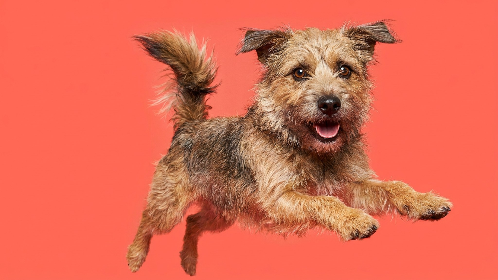

7 признаков, что питомцу хорошо — и как не спутать с апатией

9 августа 2026 · ≈3 минуты чтения · Поведение · Быт с питомцем
Питомец лежит тихо, никуда не просится — и кажется, что всё в порядке. Но тихий питомец и довольный питомец — не всегда одно и то же. Отличить настоящее расслабление от апатии можно по конкретным признакам в позе, взгляде и ежедневных привычках. Ниже — семь сигналов благополучия у кошек и собак, и три тревожных звоночка, которые стоит не пропустить.
Язык тела счастливой кошки
Кошка не демонстрирует радость открыто. Её сигналы тонкие, но читаемые:
- Хвост трубой при встрече. Вертикально поднятый хвост — приветствие и знак доверия.
- Медленное моргание. Долгий взгляд с плавно закрывающимися веками — кошачий эквивалент улыбки.
- Топтание лапами («молочный шаг»). У взрослой кошки это признак расслабленности и удовольствия.
- Поза «пирожок» или на боку. Расслабленное лежание с открытым животом — сигнал полного доверия к среде.
- Мурлыканье в спокойном контексте. Рядом с вами в тишине — знак комфорта (не путать с мурлыканьем при напряжённой позе).
- Игра и любопытство. Охота за игрушкой, интерес к новым предметам — признак того, что кошке интересно жить.
🐾 Экономьте на лишних визитах к врачу
Сначала спросите AI-ветеринара в AnimaLife — часто этого достаточно, чтобы понять, нужен ли визит к врачу.
Спросить бесплатно → Спросить в MAX →
Язык тела довольной собаки
Собака — открытый коммуникатор, но и здесь есть нюансы:
- «Виляние всем задом». Виляние кончиком хвоста — нейтрально; когда включается всё тело — собака по-настоящему рада.
- Мягкие глаза и приоткрытая пасть. Расслабленный взгляд без напряжения вокруг глаз и слегка открытый рот — сигнал комфорта.
- Игровой поклон. Передние лапы вперёд, зад поднят — приглашение играть. Чёткий знак хорошего самочувствия.
- Интерес к еде и прогулке. Ест с удовольствием и оживляется при виде поводка.
- Сон в открытой позе. На спине с открытым животом — максимальная уязвимость: значит, собака чувствует себя в безопасности.
Общие поведенческие признаки
Счастливый питомец — кошка или собака — показывает несколько стабильных паттернов:
- Стабильный аппетит. Ест с интересом, не пропускает кормления без причины.
- Груминг в норме. Кошка ухаживает за собой сама; собака позволяет расчёсывать. Слишком много или ноль — сигнал для наблюдения.
- Инициатива к контакту. Сам приходит, ложится рядом — не за едой, а за компанией.
- Любопытство. Реагирует на новое с интересом, а не тревогой.
Когда «тихий» — не значит «довольный»
Апатия выглядит похоже на спокойствие, но это разные состояния. Стоит понаблюдать внимательнее, если питомец:
- перестал реагировать на игрушки и привычные активности;
- прячется или избегает контакта там, где раньше искал его;
- потерял интерес к еде или ест заметно меньше обычного;
- стал малоподвижным и не откликается на приглашение к прогулке или игре.
Один из этих признаков сам по себе может быть временным. Если несколько сохраняются больше двух дней — это повод обратиться к ветеринару.
Как добавить питомцу благополучия
Счастье питомца — среда, которую создаёт хозяин:
- Предсказуемый режим. Кормление и прогулки в одно время снижают тревогу.
- Обогащение среды. Кошке — когтеточки, полки, окно с видом. Собаке — нюхательные прогулки, смена маршрутов.
- Игрушки-головоломки. Кормушки-пазлы задействуют мозг и убирают скуку.
- Качественный контакт. Игра, поглаживание, внимание — без гаджета в руке.
🐾 Всё о вашем питомце — в одном приложении
AI-ветеринар, дневник, напоминания о прививках и уходе. Установите AnimaLife — это бесплатно, в Telegram и MAX.
Открыть в Telegram → Открыть в MAX →
🐾 Понравился разбор?
Подпишитесь на канал — каждый день разбираем по одному тревожному симптому у кошек и собак: что в пределах нормы, а когда пора к врачу. Подпишитесь, чтобы не пропустить разбор, который может спасти здоровье вашего питомца.
Материал носит информационный характер и не заменяет очную консультацию ветеринара.
← Все статьи · Открыть AnimaLife в Telegram · RSS